Quantitative Evaluation of Explainable AI Methods
for Gallbladder Diseases through Ultrasound Images
1. Introduction
Gallbladder diseases—including cholelithiasis, cholecystitis, polyps, adenomyomatosis, and carcinoma (GBC)—affect hundreds of millions of people worldwide. GBC is highly lethal once diagnosed at advanced stage, with a five-year survival rate below 20% [1], [2]. Ultrasound remains the primary first-line imaging modality for gallbladder evaluation. However, a systematic review reports pooled sensitivity of only 81% and specificity of 83% for acute cholecystitis, a spread wide enough to reflect substantial operator and protocol variability [3]. That motivates computer-aided classification as a decision-support aid, set against the broader promise of, and caution about premature trust in, artificial intelligence in medicine [4], [5], [6]. Deep convolutional neural networks (CNNs) now match or exceed prior gallbladder-ultrasound classifiers [7], but clinical adoption is limited by opacity. CNNs are widely regarded as “black-box” models that predict without revealing the anatomical reasoning behind the prediction [8]. In high-stakes clinical settings this is untenable. Radiologists require visual confirmation that a model attends to genuine anatomical evidence rather than imaging artefacts [9], [10].
Explainable AI (XAI) methods such as Grad-CAM [11], Grad-CAM++ [12], and gradient saliency maps address this by producing class-discriminative heatmaps. But a heatmap that looks anatomically plausible is not the same as one shown to be reliable. Ghassemi et al. [9] and Rudin [8] both argue that most clinical XAI evidence stops at qualitative visualisation. It does not test whether the explanation localises correctly, survives small perturbations, is faithful to what drives the prediction, or is reproducible across training runs. Sanity-check studies [13] and interpretability benchmarks [14] show that popular saliency methods fail exactly these tests while still looking convincing. Reliability must therefore be measured, not assumed from appearance.
For gallbladder ultrasound specifically, published work applies at most one CAM variant and reports it qualitatively (Section 2). No prior study compares multiple XAI methods quantitatively for this task or asks whether the resulting explanations are reproducible across independent training runs. This paper's central question is therefore: how much does the choice of XAI method matter for a nine-class gallbladder ultrasound classifier, and are the resulting explanations a reproducible property of the model rather than an artifact of one training run? The scope is stated explicitly throughout. This is an internal-validation study on an unlabelled-provenance dataset, evaluated at the image level. It is not an externally validated multicentre generalizability claim or a clinical deployment claim. Those broader questions define the validation programme this paper initiates (Section 5.5).
The contributions of this work are as follows. (1) A five-method quantitative XAI benchmark (Grad-CAM, Grad-CAM++, Saliency Maps, Eigen-CAM, Score-CAM) on a ResNet-50 gallbladder-ultrasound classifier. It compares more methods simultaneously, and covers more classes, than any prior gallbladder-ultrasound study identified (Table 9). (2) A quantitative XAI-reliability battery: a cosine-based cross-replicate consistency score $O^c$, deletion/insertion faithfulness against a random control, stability under clinically-invariant transforms, a model-randomisation sanity check, temperature-scaling calibration, and a shortcut audit. This moves the evaluation from “heatmaps that look right” to explanations measured to be reliable. Together with the benchmark above, it is this paper's primary contribution. (3) Grounded failure-case analysis, examining specific high-confidence misclassifications rather than aggregate accuracy. (4) An honest validation roadmap naming what this paper does not establish, namely clinician-annotated localization (Section 5.5). (5) Open reproducibility: all code, trained checkpoints, and generated figures are publicly released.
Section 2 reviews background and related work. Section 3 describes the materials and methodology. Section 4 presents classification and XAI results. Section 5 discusses their interpretation, clinical relevance, reliability, relation to prior work, limitations, and future directions. Section 6 concludes.
2. Background and related work
The literature reviewed below was identified through a structured, non-systematic search of gallbladder-ultrasound AI and medical-XAI publications (2016–2026), following the spirit of search-transparency practice recommended for systematic reviews [15]; this section is a narrative review rather than a formal systematic one.
Conventional CAD systems for gallbladder imaging relied on hand-crafted texture features and classical classifiers [16], and deep learning has since substantially improved performance. Turki et al. [17] released the multi-class UIdataGB dataset used here, drawn in part from ultrasound video sequences. Its release publication reports collection across three-to-four hospitals in Baghdad, Iraq over four years on four scanner models, but the public release carries no hospital, patient, or scanner identifier, so that provenance cannot be recovered from the released files (Section 3.1). On the same collection, Obaid et al. [18] reported 98.35% accuracy with MobileNet, evaluated with a single CAM variant reported qualitatively rather than a quantitative, multi-method XAI comparison.
A parallel body of work targets the separate, five-class GBCU dataset. Basu et al. [7] released GBCU with curriculum-learning ResNet classification, and RadFormer [19] added global-local transformer attention for interpretable GBC detection. Gupta et al. prospectively evaluated deep learning for GBC detection [20] and a multiple-instance-learning approach across explicitly identified centres [21], the kind of site-stratified evaluation this paper's site-unlabelled release cannot support. Recent work has pushed accuracy further with anatomy-aware architectures [22] and video-based masked autoencoder detection [23], building on an earlier weakly-supervised variant [24]. Other work addresses gallbladder polyps specifically [16], [25], [26]. With the partial exception of RadFormer's attention maps, none of these works compares multiple XAI methods quantitatively or tests reproducibility across independent training runs.
Deep convolutional networks are now the dominant approach across medical-imaging classification generally. Transfer learning from ImageNet-pretrained backbones such as ResNet [27], DenseNet [28], and EfficientNet [29] is standard practice for small medical datasets [30]. However, this performance gain carries a well-documented cost: such models are widely regarded as “black boxes,” and clinical adoption depends on being able to inspect, not merely trust, the reasoning behind a prediction [8]. Surveys by Tjoa and Guan [31], van der Velden et al. [10], and the edited volume of Samek et al. [32] converge on the same caution: qualitative heatmap visualisation is the most common form of “explanation” reported in clinical deep learning. It is routinely presented as sufficient evidence of interpretability on its own, without further testing [8], [9].
The five methods evaluated here span the main families of CAM-based attribution: gradient-weighted Grad-CAM [11], its second-order refinement Grad-CAM++ [12], pixel-space gradient saliency [33], the class-agnostic gradient-free Eigen-CAM [34], and the gradient-free Score-CAM [35]. Each is formally defined in Section 3.3. Model-agnostic methods such as SHAP [36] and LIME [37], and gradient-based variants such as Integrated Gradients [38] and LayerCAM [39], extend the broader attribution landscape but fall outside this paper's scope.
A growing body of work argues that visual plausibility is an insufficient standard for medical XAI. Adebayo et al. [13] showed that several popular saliency methods are insensitive to model or label randomisation—a sanity check any trustworthy method should fail loudly. Hooker et al. [14] proposed the ROAR benchmark for quantitatively comparing methods by feature-removal faithfulness. Ghassemi et al. [9] and Rudin [8] separately argue that post-hoc explanation methods are routinely over-trusted in healthcare without this kind of quantitative scrutiny. Geirhos et al. [40] formalised shortcut learning. Zech et al. [41] demonstrated a concrete medical-imaging case in which a pneumonia classifier partly learned hospital-specific image artefacts rather than pathology—precisely the failure mode the shortcut audit (Section 4.4) is designed to catch. Guo et al. [42] showed that modern deep networks are frequently miscalibrated despite high accuracy, motivating the calibration analysis of Section 4.4. Rather than only citing this tradition, this paper instantiates it for gallbladder ultrasound: the Adebayo sanity check, a deletion/insertion faithfulness test in the spirit of ROAR, a shortcut audit (all Section 4.4), and a cross-replicate consistency score $O^c$ are all run directly.
Three gaps emerge from the literature above. First, published gallbladder-ultrasound classifiers apply at most one CAM variant qualitatively. None is known to compare Grad-CAM, Grad-CAM++, Saliency Maps, Eigen-CAM, and Score-CAM quantitatively for this task. Second, none of this literature tests whether its explanations are reproducible across independently trained models, as opposed to an artifact of one training run. Third, the quantitative-XAI-reliability tradition above—sanity checks, faithfulness testing, shortcut audits, calibration—has not, to the best of available knowledge, been brought together for gallbladder ultrasound specifically. This paper addresses all three gaps (Table 9, Section 5.3).
3. Materials and methods
This section describes the research framework: dataset, preprocessing, classification model, training configuration, the five XAI methods and the proposed consistency metric, the evaluation protocol, and implementation details. Fig. 1 summarises the pipeline: a site-unlabelled dataset release is used (Section 3.1), a ResNet-50 [27] classifier is trained on the dataset, all five XAI methods of Section 3.3 are applied to that model, and quantitative evaluation follows.
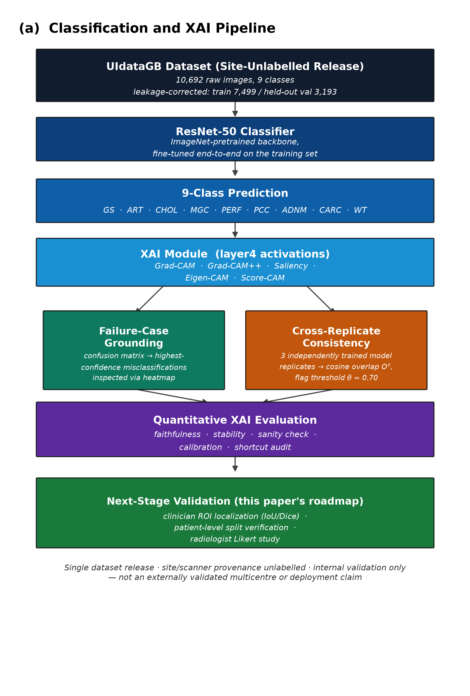
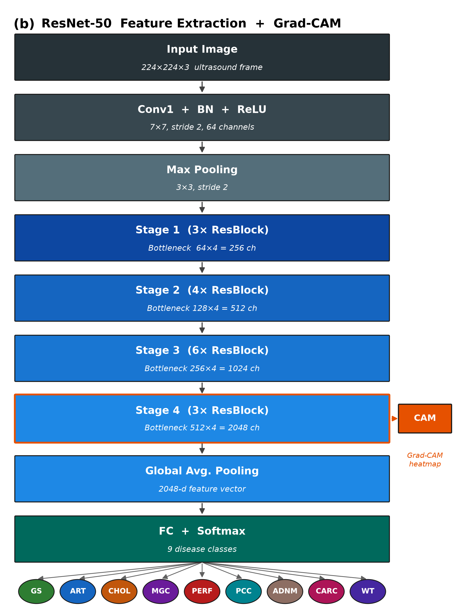
Fig. 1. (a) End-to-end
classification and XAI pipeline used in this paper, run on a
site-unlabelled public dataset release.
(b) ResNet-50 backbone: all four CAM-family methods tap the
Stage 4 (layer4) activations, the highest-level
convolutional features before global average pooling.
3.1. Dataset description
This study uses the publicly available UIdataGB dataset [17], a multi-class gallbladder ultrasound image collection spanning the nine disease classes of Table 1. Because part of the collection was assembled from video-cine sequences, which can produce near-identical consecutive frames, the released train/validation split was de-duplicated at the image-cluster level using perceptual hashing (64-bit pHash, Hamming distance $\le 8$ treated as a near-duplicate) before any classification or XAI result was computed, so that reported performance reflects genuine generalisation rather than memorised near-duplicates.
Final dataset statistics. The de-duplicated split comprises 7,499 training and 3,193 validation images (Table 1, Fig. 2). Carcinoma is the largest class (1,590 images total) and Wall Thickening the smallest (990). As Section 4.1 shows, the weakest-performing classes (Perforation, Gallstones) are not simply the smallest ones. Class size alone does not explain the per-class performance profile.
| Class | Train | Validation | Total |
|---|---|---|---|
| Gallstones (GS) | 927 | 399 | 1326 |
| Abdomen & Retroperitoneum (ART) | 807 | 363 | 1170 |
| Cholecystitis (CHOL) | 795 | 351 | 1146 |
| Membranous/Gangrenous Cholecystitis (MGC) | 868 | 356 | 1224 |
| Perforation (PERF) | 742 | 320 | 1062 |
| Polyps & Cholesterol Crystals (PCC) | 734 | 286 | 1020 |
| Adenomyomatosis (ADNM) | 813 | 351 | 1164 |
| Carcinoma (CARC) | 1120 | 470 | 1590 |
| Wall Thickening, various causes (WT) | 693 | 297 | 990 |
| Total | 7499 | 3193 | 10692 |
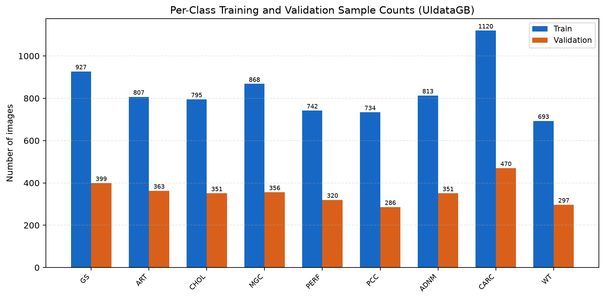
3.2. Classification model and training configuration
Images are resized to $224\times224$ and normalized using ImageNet statistics. Standard augmentations (random horizontal flip, $\pm15^\circ$ rotation, brightness/contrast jitter) [43] are applied during training only, not at validation time, and standard cross-entropy is used (Table 2) rather than a class-imbalance-aware loss such as focal loss [44]. Given the class imbalance in Table 1, a weighted or focal-loss ablation is a natural next step, left for future work.
ResNet-50 [27]
pretrained on ImageNet [30] is
adopted as the feature extractor, with the final fully-connected
layer replaced by a nine-class classification head:
Dropout($p=0.4$) → Dense(256,
ReLU) → Dropout($p=0.3$) → Softmax over
the nine classes of Table 1. ResNet-50's residual structure and
deep feature hierarchy make it well suited to CAM-family explanation
methods, since the layer4 output encodes rich semantic
features prior to global average pooling. ResNet-50 is used rather
than deeper or more parameter-efficient alternatives such as
DenseNet-121 [28] or EfficientNet
[29] for comparability with prior
gallbladder-ultrasound baselines [7],
which are themselves ResNet-based. Comparing backbones is not this
paper's focus.
| Hyperparameter | Value |
|---|---|
| Backbone | ResNet-50 (ImageNet) |
| Optimizer | Adam, $\beta_1{=}0.9$ |
| Learning rate | $1\times10^{-4}$ |
| Weight decay | $1\times10^{-4}$ |
| Loss function | Cross-entropy |
| Batch size | 32 |
| Training epochs | 10 |
| Replicate models $R$ | 3 |
| Train / Val split | 70% / 30% (cluster-level, Section 3.1) |
| Framework | PyTorch 2.x, torchvision 0.15 |
| Model parameters | 24.03M (all trainable) |
| Checkpoint size | 96 MB (fp32) |
| Inference latency | 187 ms/image (CPU, 4 threads); ~44 ms (GTX 1050) |
Latency is architecture-bound, not class-count-bound (a 9-way vs. 5-way softmax head differs by a negligible 2,048×4 parameters), so the measured value from the identical ResNet-50/GTX 1050 setup is unchanged.
3.3. Explainability methods and consistency metric
Five complementary visual-explanation methods
are applied to the trained ResNet-50 model: four target the final
convolutional layer (layer4), which encodes the
highest-level semantic features before global average pooling, while
one (Saliency) operates directly in pixel space. Let
$A^k \in \mathbb{R}^{H \times W}$ denote the $k$-th feature map of
the target layer, and let $y^c$ be the class score for class $c$
before softmax.
1) Grad-CAM: Grad-CAM [11] computes a class-discriminative localization map by weighting each feature map $A^k$ with the global-average-pooled gradient of $y^c$ with respect to that map:
The ReLU retains only positive evidence. The heatmap is upsampled to $224\times224$ and overlaid on the input.
2) Grad-CAM++: Grad-CAM++ [12] extends Grad-CAM using a pixel-wise weighted average of second-order partial derivatives, giving more weight to pixels where the gradient is strong and locally peaked, producing sharper localization for small or multiple lesions:
3) Saliency Maps: Gradient saliency [33] computes the gradient of the class score $y^c$ with respect to the input image pixels $\mathbf{x} \in \mathbb{R}^{3 \times H \times W}$:
For visualisation the maximum over colour channels is taken and Gaussian smoothing applied ($\sigma=1$).
4) Eigen-CAM: Eigen-CAM [34] is class-agnostic: it reshapes the target-layer activation tensor $A \in \mathbb{R}^{K \times HW}$ and computes its first principal component via singular value decomposition, $A = U\Sigma V^{\!\top}$, projecting onto the dominant activation direction:
where $v_1$ is the first right-singular vector. Because Eigen-CAM does not condition on class $c$, it highlights the single dominant activation pattern regardless of predicted class.
5) Score-CAM: Score-CAM [35] is gradient-free: each channel's importance weight is obtained by masking the input image with that channel's (upsampled, normalised) activation map and measuring the resulting change in the model's own softmax score for class $c$,
where $f^c(\cdot)$ is the softmax score for class $c$ and $\mathbf{x}_b$ a baseline (blank) input. The cost is one forward pass per channel, computed here on GPU.
All five methods are applied to the primary model $M_0$ and to each replicate $\{M_1,M_2,M_3\}$ on the same input images, so consistency scores can be computed for every class and method. Algorithm 1 formalises the pipeline.
Output: heatmaps per method and model, consistency scores $O_r^c$
A heatmap that looks anatomically plausible for one trained model is not, by itself, evidence that the explanation reflects a stable property of the learned decision boundary rather than an artifact of that specific training run. To test this, a cosine-consistency score is defined between the primary model's heatmap and each of $R{=}3$ independently trained replicate models' heatmaps, for the same class and image:
where both heatmaps are flattened and normalised to $[0,1]$ before computing cosine similarity. Because $O_r^c \in [0,1]$, a value near 1 indicates that the two independently trained models produce essentially the same explanation for class $c$. A value near 0 indicates that the explanation is training-run dependent rather than a robust model property. A threshold of $\theta = 0.70$ is used to flag class/replicate pairs whose explanations diverge substantially, following common practice for cosine-based agreement thresholds in the representation-similarity literature.
All classification results in Section 4.1 come from one primary model, $M_0$, trained on the full 7,499-image corrected training set with no resampling. To compute $O^c$, three additional replicate models $\{M_1,M_2,M_3\}$ are trained on three disjoint subsets of the same corrected training set (2,749, 2,089, and 2,661 images respectively). These are training-resampling replicates, not independent clinical sites. Each subset has a different per-class composition by construction, so $O^c$ jointly probes robustness to both re-initialisation and moderate class-distribution shift. Running all five XAI methods on four models over the full 3,193-image validation set is computationally expensive, so $O^c$ is computed on a stratified subset of 8 images per class (72 total). The faithfulness, stability, and sanity-check batteries of Section 4.4 use larger stratified samples of 144, 216, and 108 images respectively. This is a reproducibility check on the explanation, not a multicentre or domain-shift experiment. Genuine cross-site validation instead requires images with known, traceable hospital or scanner identity, which this dataset's public release does not provide (Section 5.4, Section 5.5).
3.4. Evaluation protocol
1) Classification Metrics: Classification performance is reported as Accuracy, Macro-F1, AUC-ROC (one-vs-rest) [45], and per-class Sensitivity and Specificity. Given the class imbalance in Table 1, ROC-AUC should be read alongside per-class sensitivity rather than in isolation, since precision-recall curves can be more informative for rarer classes under imbalance [46]. It is retained mainly for continuity with prior gallbladder-ultrasound baselines [7], [19], [20], [21]. Per-class F1 and AUC (Table 4) provide the classification context within which XAI results should be interpreted. Classes with low F1 (Perforation, Gallstones) are the primary targets for XAI investigation.
2) XAI Evaluation Metrics: XAI quality is evaluated along seven dimensions. (1) Anatomical plausibility—visual inspection of whether heatmaps concentrate on gallbladder wall, lumen, and adjacent tissue rather than artefacts (Section 4.3). (2) Cross-method comparison—qualitative and quantitative comparison of all five methods (Section 4.3). (3) Cross-replicate consistency—the $O^c$ score of Section 3.3, with $\theta=0.70$ as the divergence threshold (Section 4.3). (4) Faithfulness—deletion/insertion curves against a random control (Section 4.4). (5) Stability—agreement of the explanation under clinically-invariant transforms (Section 4.4). (6) a model-randomization sanity check (Section 4.4). (7) a shortcut-learning audit (Section 4.4). SSIM, Pearson correlation, and top-decile IoU quantify agreement in (5); deletion/insertion AUC quantifies (4). The one dimension this paper does not establish is localization of the explanation against clinician-annotated regions of interest, which requires expert annotation and is scoped as the immediate next step (Section 5.5).
A classifier can be accurate yet miscalibrated, since its softmax confidence need not match its true correctness rate [42]. A single scalar temperature $T>0$ is therefore fit post-hoc on a held-out calibration split, dividing the model's pre-softmax logits $\mathbf{z}$ by $T$ before the softmax, $\hat{p} = \mathrm{softmax}(\mathbf{z}/T)$. $T$ is chosen to minimise negative log-likelihood without altering predictions (argmax is invariant to $T$). Expected Calibration Error (ECE, 15 bins) and Brier score are reported before and after temperature scaling (Section 4.4).
All experiments and XAI analyses were run with a
fixed random seed (seed = 42 for the primary model,
seeds 7 and 123 for the multi-seed replication of Table 3)
for reproducibility, in a software environment of Python 3.10,
PyTorch 2.x, and torchvision 0.15. The
de-duplication split correction (Section 3.1)
uses 64-bit perceptual hashing via the imagehash library
and a union-find connected-components implementation, included
in fedgb/dedupe_split_uidatagb.py. XAI heatmaps are
generated post-training using the saved model checkpoints, with full
code—including all five XAI methods and the consistency-scoring
module—included in fedgb/gradcam.py. The UIdataGB
dataset is publicly available via its Data in Brief release
[17].
4. Results and analysis
4.1. Classification performance
Table 3 reports the primary-model configuration (Table 2) on the held-out validation split of Section 3.1.
| Metric | Value |
|---|---|
| Accuracy | 0.9305 |
| Macro-F1 | 0.9303 |
| Macro AUC-ROC | 0.9965 |
| Validation $n$ | 3193 |
A three-seed replication (seeds 7, 42, 123; identical architecture, optimizer, and epoch budget) gives accuracy $0.9210\pm0.0131$, macro-F1 $0.9207\pm0.0131$, macro AUC-ROC $0.9948\pm0.0023$ (mean $\pm$ std, $n=3$).
Paired statistical significance, three-seed replication. DeLong's test [47] on per-class, one-vs-rest AUC finds only 1 of 9 classes differs significantly between seed 7 and seed 42. Five of 9 differ for each comparison involving seed 123. Bootstrap 95% confidence intervals [48] (2,000 resamples) place seed 123 at $[0.895,\,0.915]$, not overlapping seed 7 $[0.917,\,0.935]$ or seed 42 $[0.922,\,0.939]$. McNemar's exact test [49] agrees: the seed 7-vs-seed 42 difference is not significant ($p=0.451$), while both seed 123 comparisons are ($p<0.001$). Seed 123 is therefore a genuinely weaker run rather than noise, and it pulls the three-seed mean (92.10%) below the seed 42 headline. Because images sharing a filename-prefix group are correlated, a group bootstrap (resampling whole groups, $n=209$ groups over 3,193 validation images, 2,000 resamples) was also run: the resulting 95% accuracy intervals are 2.7–2.9× wider than the image-level intervals at every seed, confirming the image-level CIs above understate true uncertainty. The same run adds macro PR-AUC (0.968–0.981) and balanced accuracy (0.909–0.929) per seed.
Table 4 gives the per-class breakdown (seed = 42). Per-class F1 does not track training-set size. The two weakest classes, Perforation (0.8944) and Gallstones (0.9001), are mid-sized, while the smallest class, Wall Thickening (990 images), reaches 0.9406. These two weakest classes are the targets of the failure-case and XAI analysis below.
| Class | F1 | AUC-ROC | Sensitivity | Specificity |
|---|---|---|---|---|
| Gallstones (GS) | 0.9001 | 0.9955 | 0.9373 | 0.9792 |
| Abdomen & Retroperitoneum (ART) | 0.9161 | 0.9911 | 0.8871 | 0.9936 |
| Cholecystitis (CHOL) | 0.9601 | 0.9985 | 0.9259 | 0.9996 |
| Membranous/Gangrenous Cholecystitis (MGC) | 0.9428 | 0.9984 | 0.9494 | 0.9919 |
| Perforation (PERF) | 0.8944 | 0.9952 | 0.8469 | 0.9948 |
| Polyps & Cholesterol Crystals (PCC) | 0.9375 | 0.9958 | 0.8916 | 0.9990 |
| Adenomyomatosis (ADNM) | 0.9360 | 0.9990 | 1.0000 | 0.9831 |
| Carcinoma (CARC) | 0.9455 | 0.9956 | 0.9404 | 0.9916 |
| Wall Thickening (WT) | 0.9406 | 0.9996 | 0.9865 | 0.9886 |
| Macro Avg | 0.9303 | 0.9965 | 0.9295 | 0.9913 |
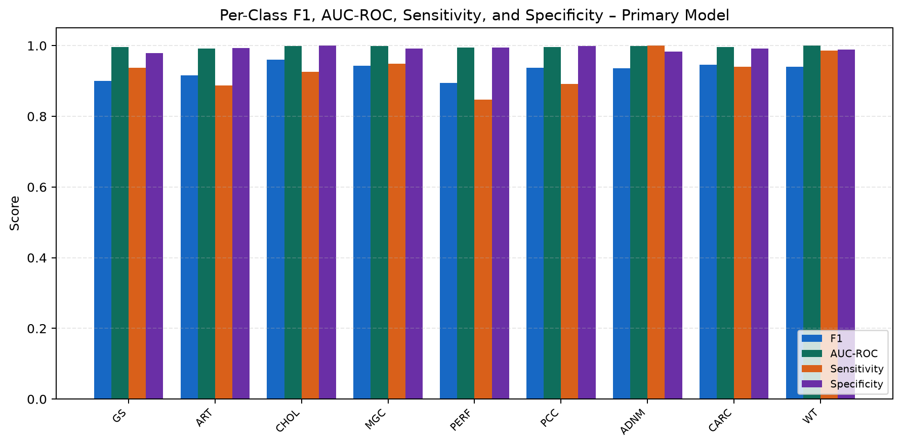
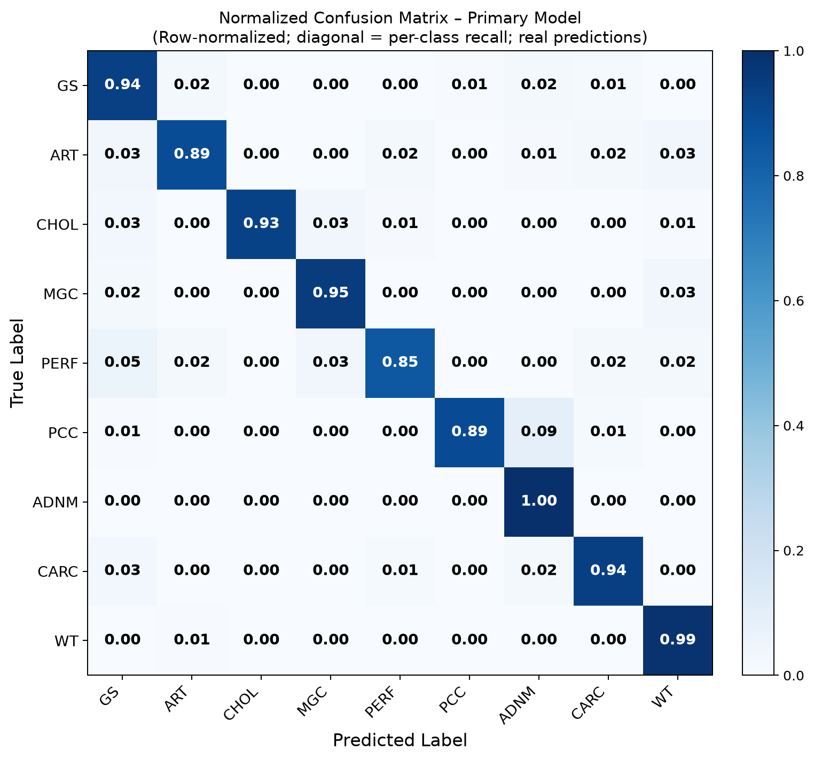
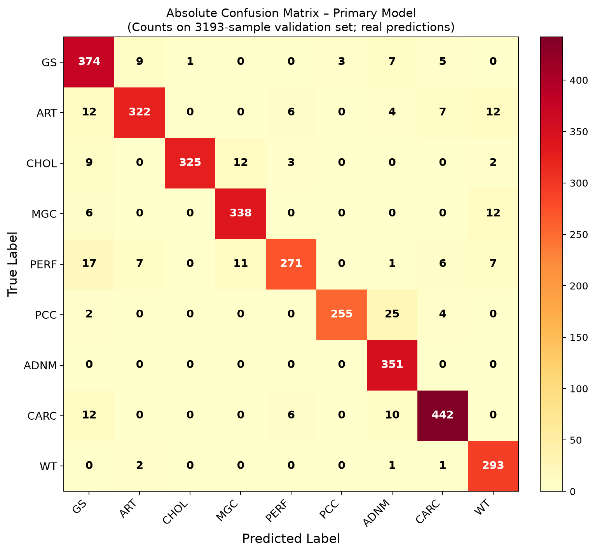
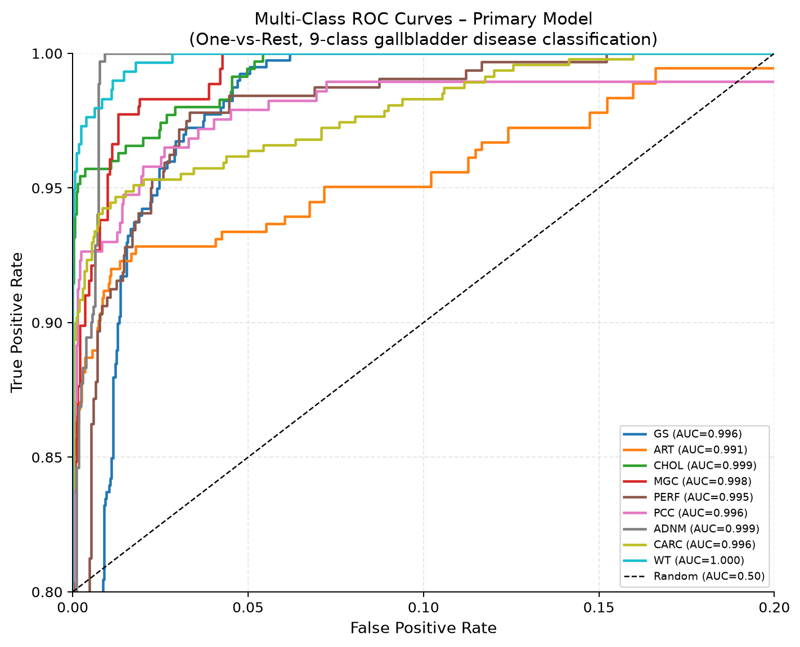
4.2. Failure-case analysis
Of the 3,193 corrected validation images, the model misclassifies 222 (6.95%). Eight confusion pairs account for just over half of all errors (113 of 222, 50.9%); the full matrix is given in Fig. 4. Three patterns stand out. First, the single largest error, Polyps & Cholesterol Crystals → Adenomyomatosis (25 images), links two benign entities that both present as echogenic mural foci. Second, Perforation is confused with Gallstones (17) and Membranous/Gangrenous Cholecystitis (11), together 28 of its errors. This is consistent with perforation radiologically overlapping both stone disease and severe gangrenous wall change. Third, Cholecystitis → Membranous/Gangrenous Cholecystitis (12) and Membranous/Gangrenous Cholecystitis → Wall Thickening (12) form a severity-spectrum chain. That is the clinically least dangerous direction among the top pairs, since all three classes prompt continued attention. By contrast, Carcinoma → Gallstones (12) is a missed-malignancy error read as benign.
Fig. 6 grounds this in two high-confidence errors from the two weakest classes. A true-Perforation image is classified Gallstones at 99.6% confidence, with its Grad-CAM++ heatmap on a bright, shadow-adjacent structure. A true-Gallstones image is classified Abdomen & Retroperitoneum at 93.6%. In both cases the model is highly confident yet wrong, and the heatmap looks anatomically plausible rather than off-target. Heatmap plausibility alone would not have flagged either error (Section 5.2).
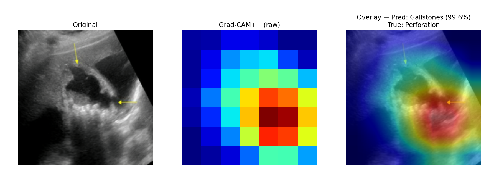
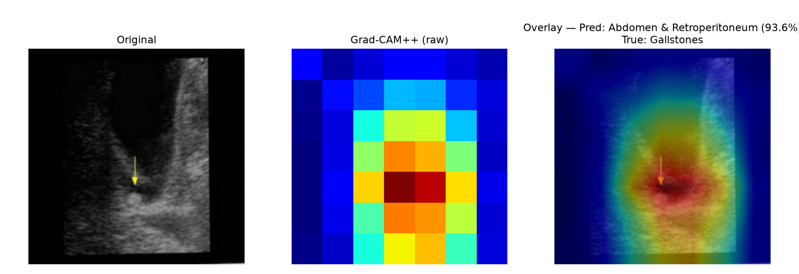
Fig. 6. Two representative high-confidence misclassifications, one from each of the two weakest classes (Table 4). Left: true Perforation predicted Gallstones (99.6%) — the single largest confusion-pair direction for Perforation (Pattern 2). Right: true Gallstones predicted Abdomen & Retroperitoneum (93.6%). Each panel shows the original ultrasound, the Grad-CAM++ heatmap, and the overlay. Both heatmaps are anatomically plausible-looking despite the wrong label, illustrating that heatmap plausibility alone does not reliably flag classification errors.
Confidence and calibration signal (uncalibrated). Mean softmax confidence is 0.974 on correctly classified images but 0.771 on misclassified ones, suggesting that a confidence-threshold triage could surface many mistakes for review. This is only a raw-softmax observation, however. Raw softmax confidence is known to be an unreliable proxy for true probability [42]. This miscalibration is quantified and formally corrected (ECE, Brier score, temperature scaling) in Section 4.4.
4.3. Qualitative and quantitative comparison of XAI methods
All five XAI methods are applied to the primary model across all nine disease classes. Grad-CAM produces smooth, region-level heatmaps, while Grad-CAM++ consistently generates sharper, more focused activation patches, particularly for Carcinoma and Membranous/Gangrenous Cholecystitis, where the discriminative feature is a localised wall irregularity rather than a diffuse region. Saliency Maps highlight fine-grained pixel-level evidence but carry more background noise. Eigen-CAM, being class-agnostic, highlights the single dominant activation pattern regardless of predicted class. This makes it informative as a sanity baseline but weaker for per-class discrimination. Score-CAM produces heatmaps similar in character to Grad-CAM++, since both explicitly condition on the target class's evidence, one via second-order gradients and the other via masked-input forward passes.
Fig. 7 shows one representative image per class across all five methods side by side. Saliency Maps consistently highlight gallbladder boundary pixels. Eigen-CAM's class-agnostic pattern is visibly less anatomically focused than the other four methods across every row.
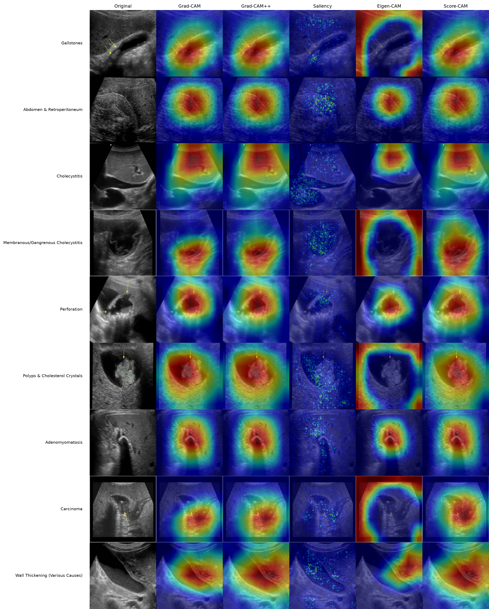
A second, independent sample per class is shown in Fig. 8, confirming these patterns are not an artefact of one cherry-picked image per class. The full 54-image gallery is in Supplementary Material A.
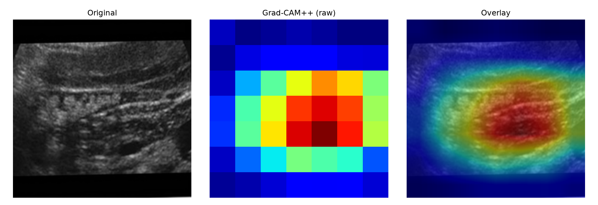
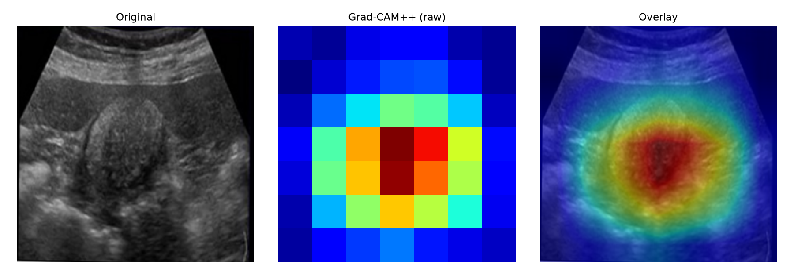
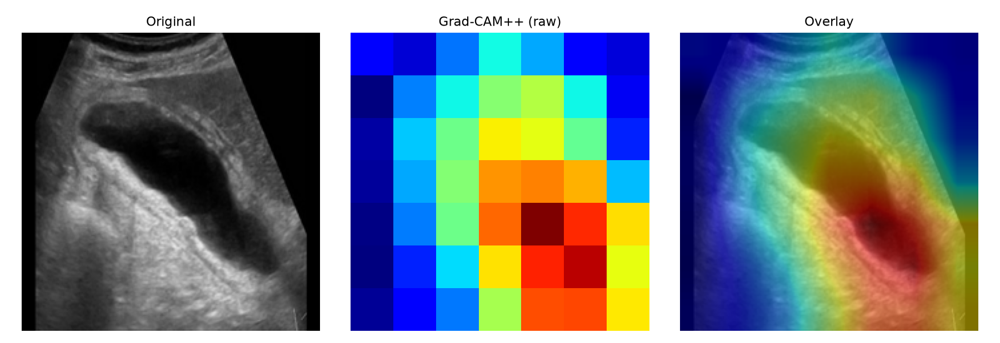
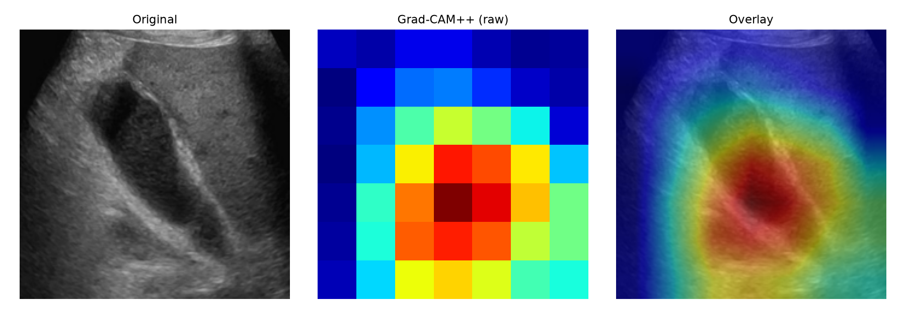
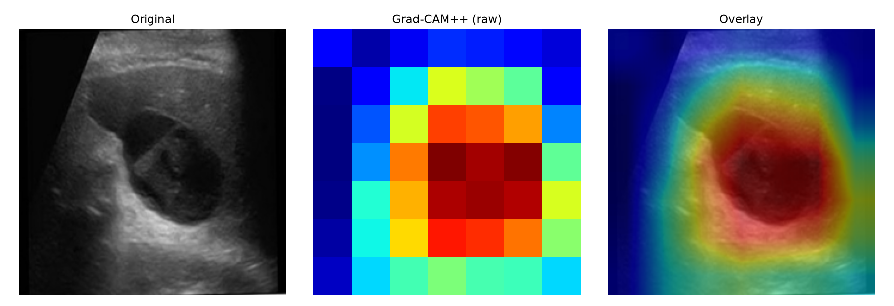
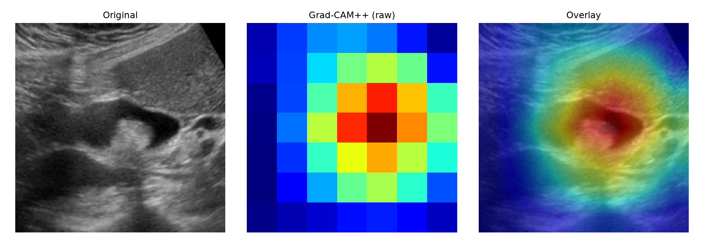
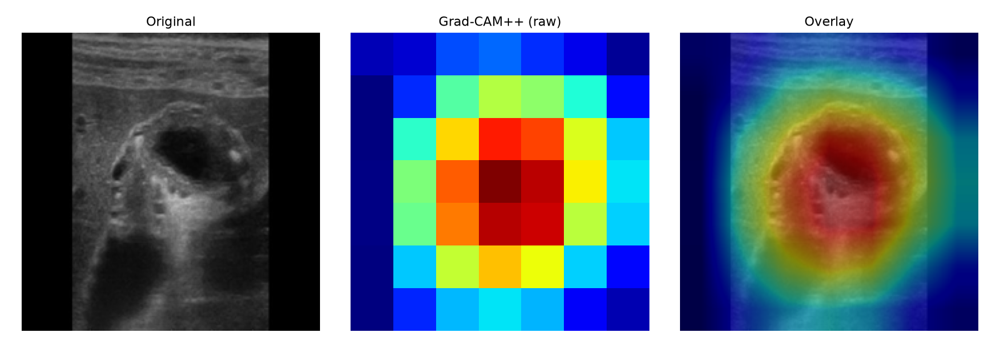
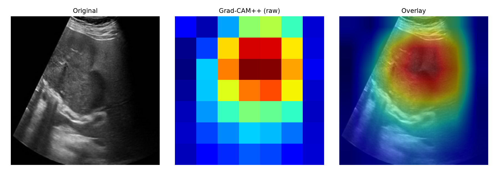
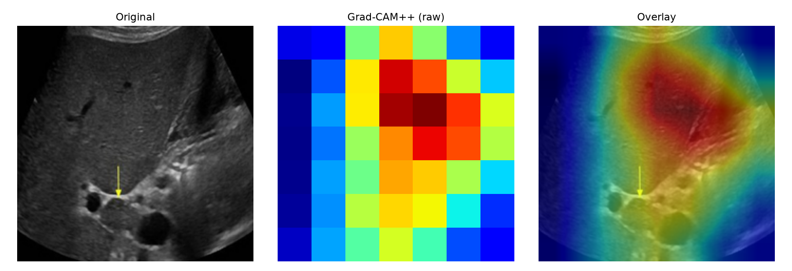
Fig. 8. Original image, raw Grad-CAM++ heatmap, and overlay for a second, independent representative image per class (distinct from Fig. 7's sample). Attention concentrates on central gallbladder-wall and lumen content across all nine classes, consistent with the class-specific patterns described in Section 4.3.
| Method | $R_1$ $O_1^c$ | $R_2$ $O_2^c$ | $R_3$ $O_3^c$ | Macro Mean ± Std |
|---|---|---|---|---|
| Grad-CAM | 0.898 | 0.629 | 0.781 | 0.769 ± 0.314 |
| Grad-CAM++ | 0.948 | 0.935 | 0.948 | 0.944 ± 0.044 |
| Saliency Map | 0.686 | 0.669 | 0.689 | 0.681 ± 0.037 |
| Eigen-CAM | 0.280 | 0.227 | 0.220 | 0.242 ± 0.343 |
| Score-CAM | 0.939 | 0.934 | 0.937 | 0.937 ± 0.051 |
Computed between the primary model and each of three independently trained replicate models (Section 3.3) over the same stratified 72-image set for every method. This quantifies explanation reproducibility only; it is not a measure of diagnostic or localization correctness, which requires clinician-annotated regions of interest (Section 5.5).
| Class | Grad-CAM | Grad-CAM++ | Saliency Map | Eigen-CAM | Score-CAM |
|---|---|---|---|---|---|
| Gallstones (GS) | 0.595 | 0.932 | 0.651 | 0.271 | 0.928 |
| Abdomen & Retroperitoneum (ART) | 0.850 | 0.941 | 0.702 | 0.255 | 0.934 |
| Cholecystitis (CHOL) | 0.860 | 0.943 | 0.670 | 0.333 | 0.943 |
| Membranous/Gangrenous Cholecystitis (MGC) | 0.727 | 0.959 | 0.681 | 0.073 | 0.931 |
| Perforation (PERF) | 0.749 | 0.941 | 0.678 | 0.379 | 0.932 |
| Polyps & Cholesterol Crystals (PCC) | 0.873 | 0.959 | 0.697 | 0.526 | 0.956 |
| Adenomyomatosis (ADNM) | 0.895 | 0.939 | 0.688 | 0.085 | 0.943 |
| Carcinoma (CARC) | 0.742 | 0.917 | 0.686 | 0.192 | 0.911 |
| Wall Thickening (WT) | 0.630 | 0.962 | 0.680 | 0.066 | 0.953 |
| Macro Mean | 0.769 | 0.944 | 0.681 | 0.242 | 0.937 |
Grad-CAM++ achieves the highest macro-mean consistency overall ($\bar{O}^c=0.944$) and wins six of nine classes; Score-CAM is a close second overall ($\bar{O}^c=0.937$) and wins the remaining three. Both anchor their weighting to the target class's evidence—Grad-CAM++ via second-order gradient weighting, Score-CAM via each channel's actual effect on the softmax score—avoiding the gradient saturation/noise that can affect plain Grad-CAM, which is far more volatile ($\bar{O}^c=0.769\pm0.314$) and collapses for Gallstones and Wall Thickening (0.595, 0.630). Saliency Maps and Eigen-CAM show the lowest consistency ($\bar{O}^c=0.681$ and $0.242$), with Eigen-CAM the most volatile of all five (std 0.343), falling below 0.10 for three classes (MGC, ADNM, WT): Saliency's finer pixel-space granularity makes small per-model differences contribute disproportionately to cosine divergence, while Eigen-CAM's unsupervised, class-agnostic activations are highly sensitive to differences between differently composed training subsets. Neither pattern should be read as evidence these explanations are less clinically meaningful, only less reproducible across retraining under this design.
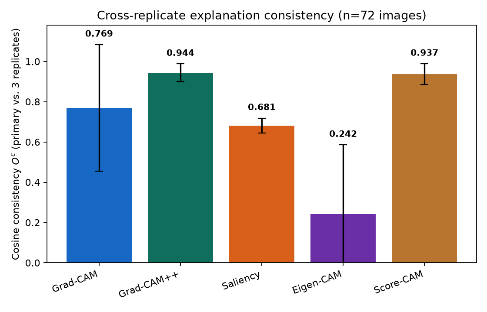
Table 6 reveals three consistent patterns. Pattern (1): Grad-CAM++ and Score-CAM stay above $\theta=0.70$ for all nine classes, while plain Grad-CAM drops below threshold for two classes it would otherwise be expected to handle well (Gallstones 0.595, Wall Thickening 0.630). This suggests Grad-CAM's coarser, unweighted feature-map averaging, rather than class difficulty, is the limiting factor. Pattern (2): Eigen-CAM collapses almost completely for Membranous/Gangrenous Cholecystitis, Adenomyomatosis, and Wall Thickening ($\bar{O}^c=0.073$, $0.085$, $0.066$). This is consistent with these three classes having the most diffuse, least focal discriminative regions (Section 4.3), which gives Eigen-CAM's unsupervised principal component the least consistent direction to lock onto across training subsets. Pattern (3): Grad-CAM's per-replicate breakdown (Table 5: 0.898, 0.629, 0.781) shows replicate $R_2$—trained on the smallest subset (2,089 images)—diverges most from the primary model. Grad-CAM++ and Score-CAM, by contrast, stay tightly clustered regardless of subset size, indicating the two best methods are also the most robust to training-data volume.
4.4. Quantitative reliability battery
Faithfulness. Consistency (Section 4.3) establishes that explanations are reproducible, not that they are faithful to the pixels the model actually relies on. Faithfulness is tested with deletion and insertion curves [14]. Most-attributed pixels are progressively replaced with a blurred baseline (deletion; lower AUC is better), then separately restored onto that baseline (insertion; higher AUC is better). Each method is compared against a random pixel-ordering control on the same 144 stratified images (20 steps).
| Method | Deletion AUC ↓ | Insertion AUC ↑ | Gap ↑ |
|---|---|---|---|
| Grad-CAM | 0.307 | 0.787 | 0.480 |
| Grad-CAM++ | 0.312 | 0.785 | 0.473 |
| Score-CAM | 0.323 | 0.778 | 0.456 |
| Random control | 0.610 | 0.597 | −0.013 |
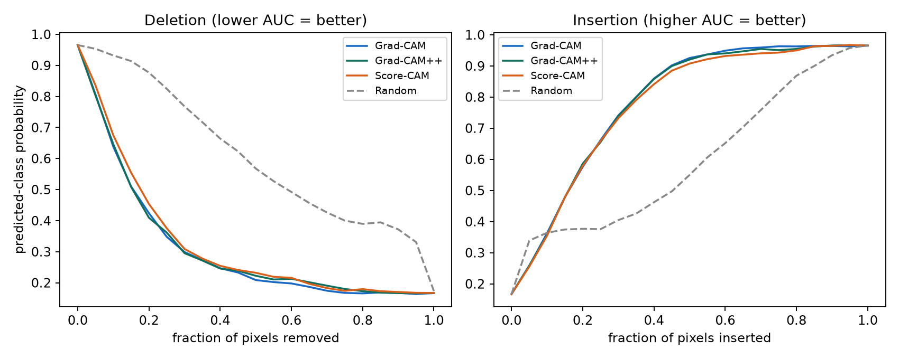
Stability. A reliable explanation should not shift substantially under image perturbations that leave the diagnosis unchanged. Three such transforms are applied to 216 stratified validation images—a $\times1.15$ brightness shift, a 10-pixel diagonal translation (heatmap realigned before comparison), and additive Gaussian noise ($\sigma=0.03$). For each, Grad-CAM++ is recomputed for the originally predicted class, and agreement with the unperturbed heatmap is measured via SSIM, Pearson correlation, and top-10% pixel overlap (IoU), together with the fraction of images whose predicted class is unchanged.
| Transform | SSIM | Pearson | Top-10% IoU | Pred. kept |
|---|---|---|---|---|
| Brightness ($\times1.15$) | 0.995 | 0.998 | 0.907 | 98.6% |
| Translation (10 px) | 0.848 | 0.931 | 0.681 | 93.5% |
| Gaussian noise ($\sigma=0.03$) | 0.931 | 0.950 | 0.652 | 70.8% |
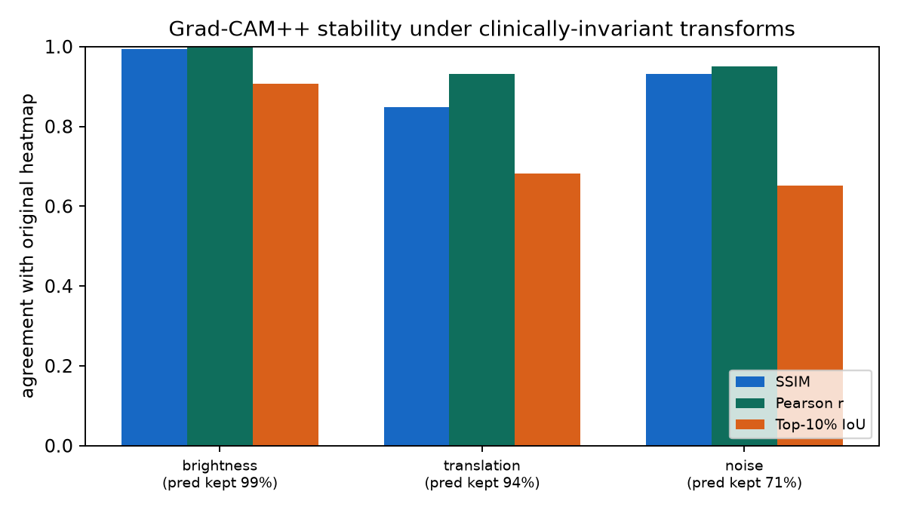
Model-parameter
randomization sanity check. A trustworthy saliency method
must depend on the model's learned weights; some popular methods
notoriously do not [13]. Following
the Adebayo et al. protocol, ResNet-50's parameters are
cascade-randomized from the output layer back toward the input
(fc → layer4 → $\dots$ → conv1).
Grad-CAM++ is recomputed for the same explained class at each stage,
and similarity to the fully-trained-model heatmap is measured (108
images). Similarity is highest when only fc is
randomized ($|\rho|=0.95$), as expected, since Grad-CAM++ taps
layer4 and fc lies downstream of that tap.
It drops sharply once layer4 is randomized
($|\rho|=0.52$) and reaches its minimum at layer1
($|\rho|=0.20$), as Fig. 12 shows. The heatmap therefore depends
on the learned convolutional features rather than acting as an
input-edge detector, and the method passes the sanity check.
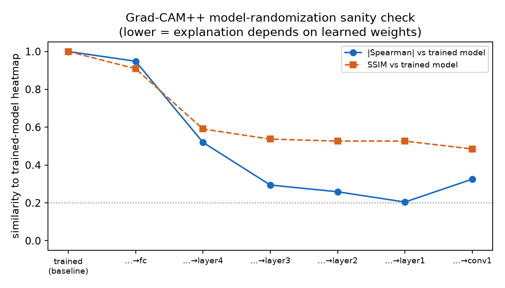
layer4—the Grad-CAM++ tap point—is randomized and continues declining through the remaining convolutional stages, confirming the explanation reflects learned weights rather than acting as an input-edge detector.Probability calibration. Section 4.2 noted that the model's raw softmax confidence separates correct from incorrect predictions but is not a calibrated probability. This is now quantified and corrected. A single temperature parameter [42] is fit on a stratified calibration half of the validation set (1,594 images) and evaluated on the held-out half (1,599 images, accuracy 0.9318). Temperature scaling ($T=1.468$) reduces Expected Calibration Error from 0.034 to 0.009 and the Brier score from 0.109 to 0.106, without altering discrimination (accuracy is unchanged by construction). Fig. 13 shows the model is mildly over-confident before scaling, with its reliability curve sitting slightly below the diagonal at high confidence, and closely calibrated afterward.
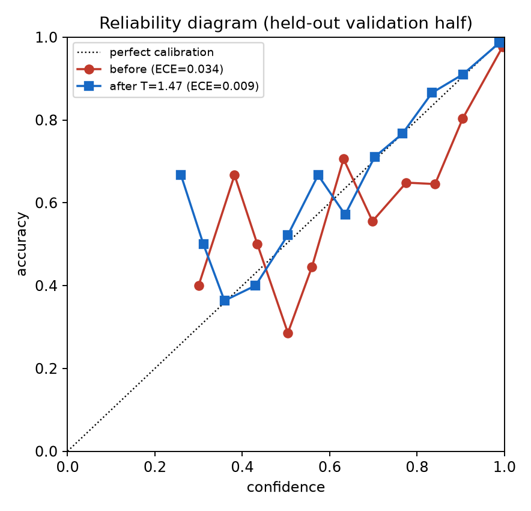
Shortcut-learning audit. Finally, this section tests whether the model exploits non-clinical cues at the image margin (burned-in text, calipers, borders) rather than anatomy [40], [41], via two measurements on 216 stratified images (Fig. 14). (i) Cropping away the outer 12% margin drops accuracy from 0.9305 to 0.7122 and macro-F1 from 0.9303 to 0.7039. (ii) Only 21.8% ($\pm$ 4.9%) of Grad-CAM++ attribution mass falls in that margin ring, though the ring covers 41.0% of the frame. These two measurements point in different directions and both are reported. Result (ii) is the cleaner shortcut signal: the model concentrates its explanation on central anatomy, not the margin. Result (i) is not on its own evidence of margin-shortcut reliance, because a 12% crop also removes genuine peripheral gallbladder and adjacent-organ anatomy. For a nine-class task with several visually similar classes, losing that anatomy plausibly costs real discriminative signal independent of any shortcut. The crop drop is therefore treated as a robustness finding, and the border-energy result as the actual shortcut audit.
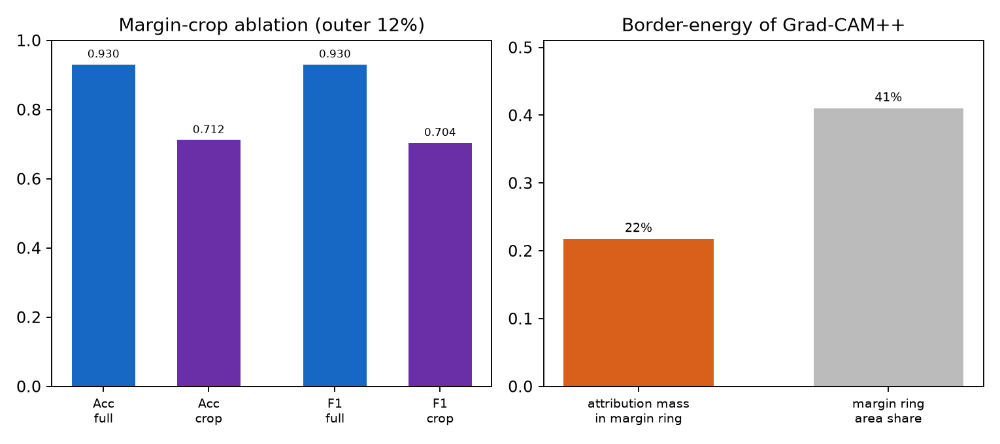
4.5. Summary of key findings
Three findings carry across Sections 4.1–4.4. Grad-CAM++ and Score-CAM lead every reliability axis measured. The explanations are quantitatively faithful to the model's decision, yet heatmap plausibility alone flags neither high-confidence errors (Section 4.2) nor subtler failure modes in general; reliability therefore has to be measured, not inferred from appearance. Of the reliability axes, only the shortcut audit is inconclusive, for the crop-versus-anatomy reason given in Section 4.4.
5. Discussion
This section interprets the classification and XAI findings of Section 4, situates them relative to prior work, and states plainly what this study does and does not establish.
5.1. Interpretation of results
The primary model reaches 93.05% accuracy and 0.9965 macro-AUC (Table 3), confirmed by a three-seed replication ($0.9210\pm0.0131$).
Per-class F1 does not track training-set size. It tracks pairwise visual overlap (Section 4.2). The largest error mode is a benign-to-benign pair, while the clinically urgent Carcinoma → Gallstones direction is a smaller but real minority.
Across every quantitative axis in Section 4, Grad-CAM++ and Score-CAM outperform Grad-CAM, Saliency Maps, and Eigen-CAM. They give the sharpest, most class-discriminative heatmaps, the highest and most stable cross-replicate consistency, and—with plain Grad-CAM—beat the random faithfulness control by a wide margin. Sharpness, reproducibility, and faithfulness are measured independently, and all three agree. That convergence is itself evidence the ranking reflects a real property of the methods rather than an artefact of one metric. Eigen-CAM's weak, high-variance consistency is expected, given it is class-agnostic by construction; it is retained as a cheap gradient-free baseline, not a deployment candidate.
Per-class attention corresponds to recognised ultrasonographic signs. Gallstones maps highlight the posterior acoustic shadow, the canonical sign of cholelithiasis. Cholecystitis and Membranous/Gangrenous Cholecystitis maps both concentrate on the wall itself, the latter more diffusely across the wall circumference, matching the more extensive mural involvement of the gangrenous stage. Perforation maps attend to wall-defect and pericholecystic regions. Carcinoma maps show focal wall attention consistent with the irregular mural thickening and mass-like lesions that characterise GBC, with Saliency additionally marking the wall–lumen interface. Polyps & Cholesterol Crystals and Adenomyomatosis both concentrate on small mural foci, consistent with both presenting as discrete echogenic structures projecting into the lumen. Abdomen & Retroperitoneum and Wall Thickening show more dispersed attention, reflecting their less focal imaging definition. These attention patterns align with the confusion structure of Section 4.2: the classes that share an imaging sign are the classes the model confuses. None of this qualitative plausibility has been checked against an independent clinician's region-of-interest annotation, which is the logical next step (Section 5.5).
5.2. Reliability and trustworthiness of explanations
Sections 4.3 and 4.4 build a cumulative case for trustworthiness along five axes. The explanations are reproducible across independently trained replicates, faithful to what the model actually uses, stable under transforms a diagnosis should be invariant to, and genuinely dependent on learned weights. On margin-based attribution specifically, they are not obviously driven by that kind of shortcut, though the crop-ablation leg of that test is inconclusive (Section 4.4). Passing the five axes is evidence that the explanations describe what the model actually does. It is not, on its own, strong evidence that what the model does is clinically trustworthy: a classifier can be internally consistent, well-calibrated, and give faithful explanations for a decision process that has not been independently validated against clinician ground truth. The margin-based shortcut audit tests only for shortcuts tied to the image margin; it does not rule out other, unmeasured shortcuts. The combined picture is that this paper's XAI-method comparison is measured and reproducible, while its classifier's explanations of disease have not yet been validated against an independent clinician's judgement (Section 5.5).
5.3. Comparison with previous studies and practical implications
Table 9 makes the comparison with prior work concrete. Prior gallbladder-ultrasound classifiers [7], [17], [18], [19], [22] and the foundational XAI-method papers [11], [12], [35] each contribute one piece: a classifier, a dataset, or a method. None combines ≥3 XAI methods, a quantitative consistency metric, and grounded failure-case analysis. This is a narrower, more instrumented claim than the accuracy gains of concurrent anatomy-aware architectures on GBCU [22], [23]. No claim is made to advance classification accuracy. The goal is to establish whether the explanations of a standard architecture can be trusted.
| Reference | Gallbladder US | ≥3 XAI Methods | Quantitative Consistency Metric | Grounded Failure-Case Analysis |
|---|---|---|---|---|
| Basu et al. [7] | ✓ | ✗ | ✗ | ✗ |
| RadFormer [19] | ✓ | ✗ | ✗ | ✗ |
| Hasan et al. [22] | ✓ | ✗ | ✗ | ✗ |
| Turki et al. [17] | ✓ | ✗ | ✗ | ✗ |
| Obaid et al. [18] | ✓ | ✗ | ✗ | ✗ |
| Selvaraju et al. [11] | ✗ | ✗ | ✗ | ✗ |
| Chattopadhay et al. [12] | ✗ | ✗ | ✗ | ✗ |
| Wang et al. [35] | ✗ | ✗ | ✗ | ✗ |
| Ours | ✓ | ✓ (5) | ✓ | ✓ |
Turki et al. is the UIdataGB dataset-release paper used in this study; Obaid et al. is the closest prior classifier, trained on the same raw 10,692-image release. These, and the GBCU studies above, provide a classifier or dataset release but no XAI evaluation. Rows for Selvaraju et al., Chattopadhay et al., and Wang et al. are the foundational general-purpose method papers, not gallbladder-specific studies; they are included to show that this paper is the first to bring ≥3 of these methods together with a quantitative agreement metric for gallbladder ultrasound.
What this paper does and does not support. Sections 4.3 and 4.4 give evidence that the model's explanations are reproducible, faithful, stable, weight-dependent, and free of obvious margin shortcuts, and that its probabilities can be calibrated. They are not evidence that the model is ready for decision support. That additionally requires quantitative localization against clinician-defined regions of interest and formal clinician review, neither of which can be produced without expert annotation (Section 5.5).
Monitoring explanation reproducibility. The consistency score $O_r^c$ could serve as an ongoing quality check when a model is retrained on updated data. If $O_r^c$ falls below $\theta=0.70$ for a class after retraining, that flags a material change in what the model attends to for that class, and triggers targeted review before the updated model is deployed. The 54-image per-class gallery already generated here (Supplementary Material A) is a natural starting panel for the clinician rating protocol of Section 5.5.
5.4. Limitations
This paper is deliberately scoped as an image-level, internal development study on one site-unlabelled public dataset release, and the limitations below follow directly from that scope. (1) No clinician-annotated localization evidence. All anatomical plausibility judgments in Section 5.1 are the authors', not an independent radiologist's. A rating protocol is planned but awaits clinician participation. (2) Single seed for per-class and XAI-battery results. Top-line accuracy is three-seed replicated, but the per-class breakdown, consistency results, and remaining battery come from one seed. (3) Bounded perturbation set. The faithfulness and stability tests use one baseline and transform set. Other choices could shift absolute numbers, though the ranking against the random control is robust. (4) The margin-based shortcut audit is inconclusive. Its crop-ablation leg is confounded with genuine anatomy loss (Section 4.4), and it tests only for margin-tied shortcuts; it does not rule out other, unmeasured shortcuts. (5) Site and scanner provenance is unlabelled rather than absent. The source publication reports collection across three-to-four hospitals in Baghdad, Iraq on four scanner models, but the public release carries no hospital, patient, or scanner identifier. This paper can therefore neither verify the split is balanced across sites, nor stratify results by site. No claim of externally validated multicentre or cross-scanner generalizability is made or implied.
5.5. Future research directions
The remaining steps, in priority order, are as follows. (1) Collect clinician region-of-interest annotations and compute IoU, Dice, pointing-game accuracy, and energy-in-ROI per method. (2) Run the planned radiologist Likert-rating study and report Cohen’s $\kappa$. (3) Extend the per-class and consistency results to multiple seeds (Limitation 2). (4) Obtain hospital-, scanner-, and patient-level metadata for the existing release, or prospectively collect site- and patient-labelled data, to enable cross-site and cross-scanner stratification (Limitation 5). Only once data with verified site-labelled multicentre provenance become available [50], would a cross-scanner validation study be an appropriate next paper. Throughout, this work follows the FUTURE-AI [51], CLAIM [52], [53], and TRIPOD+AI [54] reporting guidelines, and explicitly audits the generalization pitfalls documented elsewhere in medical-imaging machine learning [55], [56].
6. Conclusion
This paper presented a quantitative explainable-AI evaluation of a ResNet-50 model for nine-class gallbladder ultrasound classification on the public UIdataGB dataset. Five XAI methods were compared using a cosine-based consistency score $O^c$ and a full reliability battery. Grad-CAM++ and Score-CAM produced sharper, more class-discriminative, and substantially more cross-replicate-consistent maps than Grad-CAM, Saliency, or Eigen-CAM. The battery found the explanations faithful to the model's decision, stable under brightness change, dependent on learned weights, and not driven by margin-based shortcuts. Failure-case analysis showed that heatmap plausibility alone does not reliably flag high-confidence errors. This evaluation is the paper's central result.
Such an evaluation is only meaningful on genuinely held-out data. The dataset's train/validation split was therefore de-duplicated at the image-cluster level using perceptual hashing before any classification or XAI result was computed (Section 3.1).
The principal limitations are set out in Section 5.4: the absence of clinician-annotated localization evidence, the single-seed basis of the per-class and XAI-battery results, the bounded perturbation set used for faithfulness and stability testing, the fact that the margin-based shortcut audit tests only for shortcuts tied to the image margin, and the dataset's unlabelled multi-hospital, multi-scanner provenance (Section 5.5).
CRediT authorship contribution statement
Sayed Ifti Ahmed: Conceptualization, Methodology, Software, Investigation, Formal analysis, Visualization, Writing – original draft. Mst Khadiza Akter Sammi: Methodology, Validation, Data curation, Writing – review & editing.
Declaration of competing interest
The authors declare that they have no known competing financial interests or personal relationships that could have appeared to influence the work reported in this paper.
Funding
This research received no specific grant from any funding agency in the public, commercial, or not-for-profit sectors.
Code and data availability
All
XAI code required to
reproduce the analysis is included in this repository under the
fedgb/ directory. The principal entry points are:
fedgb/dedupe_split_uidatagb.py— the image-cluster de-duplication split correction of Section 3.1; emitsoutputs/phase0/leakage_check.jsonandoutputs/phase0/dedupe_split_report.json.fedgb/gradcam.py— Grad-CAM, Grad-CAM++, Saliency, Eigen-CAM, and Score-CAM classes.fedgb/compute_consistency.py— computes cross-replicate cosine consistency $O_r^c$ across the stratified evaluation set for all five methods; emitsoutputs/phase0/consistency.jsonand flags images with $O_r^c < \theta = 0.70$.fedgb/analyze_failure_cases_uidatagb.py— regenerates the confusion matrix and the failure-case figures of Section 4.2 from the saved checkpoint.fedgb/compute_faithfulness.py,compute_stability.py,sanity_checks.py,compute_calibration.py, andshortcut_audit.py— the quantitative XAI-reliability battery of Section 4.4; each emits a JSON result tooutputs/phase0/and its figure tooutputs/figures/.fedgb/generate_uidatagb_figures.py,fedgb/generate_xai_galleries.py— regenerate all classification and XAI paper figures from saved checkpoints and result JSON files.
The dataset is the publicly released UIdataGB collection [17]. Trained model checkpoints and XAI outputs will be deposited to a permanent archive (Zenodo DOI to be assigned upon acceptance). Source code is licensed MIT.
Ethics statement
This study uses the publicly released, fully anonymized UIdataGB ultrasound dataset [17], collected and released for public research use by the original data providers. No new patient data were collected, and no identifiable patient information was accessed at any stage of this work. Since the public release contains no patient- or study-level identifiers, full patient-level split independence could not be independently verified in this analysis (Section 5.4, Limitations). Separate institutional ethics board approval was not required for this secondary, fully-anonymized analysis.
References
Appendix — Extended XAI Heatmap Galleries
The full, non-cherry-picked per-class Grad-CAM++ gallery referenced in Sections 4.2 and 4.3—six validation samples per class across all nine classes, 54 figures in total—is reproduced in full below rather than only as one representative sample per class (Fig. 7). These figures are qualitative and confirmatory; the quantitative claims they support are established in Tables 5–VI and Fig. 9 above.
Supplementary A. Full Per-Class Grad-CAM++ Gallery (Primary Model)
All primary-model Grad-CAM++ samples for each of the nine disease classes (six per class, 54 total)—the non-cherry-picked companion to Fig. 7 above, which shows one representative sample per class across all five XAI methods.


Supplementary A2. Curated Three-Panel Gallery (Original / Raw Heatmap / Overlay)
A 20-image curated subset of the gallery above (2–3 samples per class, all nine classes), each shown as three panels—original ultrasound, raw (unblended) Grad-CAM++ heatmap, and image–heatmap overlay—in the same format as the main-text failure-case figure (Fig. 6), so the heatmap can be inspected on its own rather than only as a blended overlay.